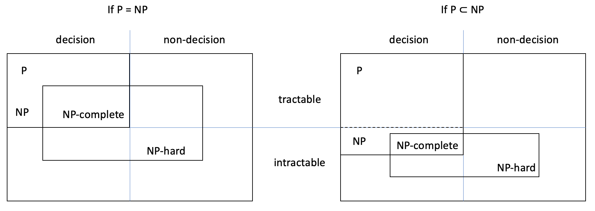

26.6. Summary
Computer scientists have classified computational problems in many ways, based on the complexity of the algorithms that solve the problems.
26.6.1. Reductions
A polynomial algorithm has a worst-case complexity of the form O(\(n^c\)), where n is the input size and c is a constant. For example, algorithms with complexity O(n³), i.e. that run in cubic time or less, are polynomial, whereas algorithms with exponential or factorial complexity aren’t.
The complexity of a problem is the lowest worst-case complexity of all algorithms that solve the problem. To know a problem’s complexity we must have an algorithm of that complexity and a proof that no other more efficient algorithm solves the problem.
Problem A reduces to problem B if there’s an algorithm of the following form that solves A.
Transform the inputs of A into the inputs of B.
Use any algorithm for B.
Transform the obtained output for B into A’s output.
Problem A is at most as hard as problem B, and B is at least as hard as A, if A reduces to B in polynomial time, i.e. if steps 1 and 3 take polynomial time.
A polynomial-time reduction of problem A to problem B can be used for three purposes:
Obtain a (possibly inefficient) algorithm for unsolved problem A, given an algorithm for solved problem B.
Prove that A is tractable, if we know that B is.
Prove that B is NP-hard, if we know that A is.
26.6.2. Problem classes
The classes (sets) of problems covered in M269 are the following. (The first two are based on the output type: they aren’t complexity classes.)
Decision problems: those that have as output a Boolean value.
Non-decision problems: all other problems.
Tractable problems: those that can be solved by a polynomial algorithm.
Intractable problems: those that can only be solved by non-polynomial algorithms.
Class P: the tractable decision problems, i.e. those that can be solved in polynomial time.
Class NP: the decision problems that can be verified in polynomial time.
Class NP-hard: the problems that are at least as hard as every NP problem.
Class NP-complete: the NP problems that are NP-hard.
A problem is in NP if there’s a polynomial verifier algorithm that, for each input that leads to a true output (a ‘yes’ decision), takes the input and a certificate, and confirms that the decision is ‘yes’.
From the definitions it follows that:
any NP problem reduces in polynomial time to any NP-hard problem
all NP-complete problems reduce in polynomial time to each other
all problems in P are also in NP: P \(\subseteq\) NP.
It’s unknown if P \(\subset\) NP or P = NP: this is the P versus NP problem or ‘P = NP?’ question.
The relationships between the classes are as follows, for P = NP and for P ≠ NP:
In practice, a tractable problem may have no usable polynomial algorithm and an NP-complete or NP-hard problem may have a usable exponential algorithm; usability depends on the exponent of the complexity, the hidden constant factors and the real-world problem instances to be dealt with (their sizes and whether they are worst cases). For example, there’s a polynomial algorithm to check if an integer is prime, but due to its large exponent (c = 12), it’s not used in practice.
Heuristic algorithms are often used to handle large instances of NP-complete and NP-hard problems. They compute approximate answers or the correct answer with high probability.
26.6.3. Problems
The satisfiability problem (SAT) is:
The postcondition could be rephrased as ‘… if there’s an interpretation that satisfies expression’. An interpretation is an assignment of a Boolean value to each variable in the expression.
The 2-SAT problem is like SAT, but the Boolean expression is a conjunction of disjunctions, with two variables or their negation per disjunction.
The decision TSP takes as input a complete weighted graph and a positive integer w. The Boolean output is true if and only if the graph has a tour with total weight w or less.
The fractional knapsack problem is like the 0/1 knapsack problem, but the solution can involve taking only part of each item. The output is therefore not just the subset of items put in the knapsack but also the percentage of each item.
The all-pairs shortest (or longest) path problem asks for a shortest (or longest non-cyclic) path in a graph, between any two nodes. If the graph is unweighted, the path has the fewest (or most) edges; if the graph is weighted, the path has the lowest (or highest) sum of weights.
Seemingly similar problems can be in different complexity classes:
Class |
Problems |
|---|---|
NP-hard |
(decision) TSP, 0/1 knapsack, subset sum, maximal independent set, all-pairs longest path, SAT |
NP-complete |
SAT, decision TSP |
tractable |
all-pairs shortest path, fractional knapsack, 2-SAT, primality |
P |
2-SAT, primality |
Most problems presented in M269 are tractable.